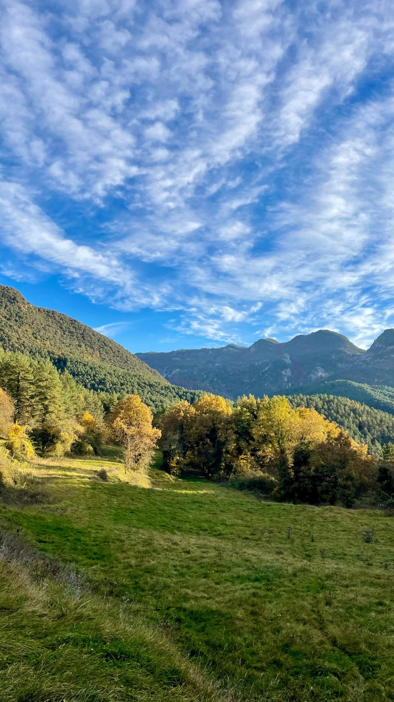

Agenda
Tria un dia, marca'l al calendari i vine. Et canviarà la setmana, potser alguna cosa més.
Pròximament
Música i sopar compartit vora el riu, sota les estrelles · espai sense alcohol ni fum.
Un cap de setmana amb les mans a la terra i la palla · places limitades.
Projecció a l'aire lliure i paradeta de crispetes entre els arbres · per a totes les edats.
Disseny de l'hort, compostatge i sembra de temporada · t'enduràs llavors a casa.
Cultura popular, música i menjar compartit als camps · l'estiu que s'acomiada.
Les dates poden variar. Escriu-nos per confirmar plaça i horaris.
No te'n perdis cap
Escriu-nos i t'avisem de les pròximes dates i de com reservar plaça.
Mantenir-me al dia